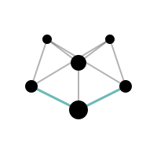

Sonata AI
| Sonata AI | |
|
 Project Topology (Abstract Representation)
|
|
| Project Status | Private Research Project |
|---|---|
| Source Code | Closed / Unreleased |
| Primary Backend | Free Pascal, x86-64 ASM, CUDA C++ |
| Primary Environment | Intel Core i7-10750H, RTX 2070 Super Mobile |
| Type | Low-level AI research platform |
| Evidence Level | Public Dossier (L4) |
Sonata AI (often abbreviated as Sonata) is a private, closed-source, low-level AI research platform. It implements a complete tensor computation, automatic differentiation, and neural network training runtime entirely from scratch. Built in Free Pascal and accelerated with x86-64 Assembly and a CUDA C++ GPU backend, it functions as a ground-up system rather than a wrapper around existing frameworks.
This dossier is not a product launch. It is a technical record of selected results from the research platform, providing public-safe evidence of validated subsystems, including heterogeneous execution, sequence modeling integration, and hardware-aware optimization.
What is public / what remains private
- Public: High-level architecture descriptions, selected benchmark results, validation metrics, capability summaries, limitation notes, and failure analyses.
- Private: Source code, exact implementation recipes, experimental history, internal architectures, and raw experimental data.
Visual Evidence
Diagrams and plots generated from validated subsystem data. Each visual maps to a specific document in the dossier — click any image to open the gallery.
Getting Started
Welcome to the Sonata AI public evidence dossier. This is a technical record of selected results from a private, closed-source, low-level AI research platform.
Browse the sections below for curated summaries, or jump straight to the Raw Documents to read the full technical dossiers.
1. Publication Map
This dossier is organized as a technical journal. Each chapter documents a validated subsystem — from architecture and training to quantization and symbolic control. Below is a summary of key findings; the full documents are available in the Raw Documents section.
00. Front Matter
Sets the scope, hardware context (i7-10750H, RTX 2070 Super, 8GB VRAM), and limitation statement for the entire dossier. Start here to understand evaluation boundaries.
01. Architecture Overview
Complete system architecture — tensor runtime, autograd engine, GPU backend, and how layers interact at the low-level. Covers the full project boundary from Pascal host code to inline assembly kernels.
02. Autograd + Mamba Integration
Integration of state-space sequence models (Mamba-style) with the custom autograd engine. Documents stability constraints, gradient flow, and training path correctness for hybrid architectures.
03. Training Laboratory Results
Measured training throughput (~5,600 tok/s sustained), hardware constraints, and loss behavior for a 182K parameter Mamba-style model trained entirely on mobile RTX 2070 Super hardware.
04. Benchmark Correction and Stability
Transparent documentation of the rollback from ~7,600 tok/s to a stable ~5,600 tok/s after identifying memory leak artifacts in initial benchmarks. Integrity over inflated numbers.
05. GPU and Heterogeneous Execution Evidence
Validation of the CUDA C++ backend with MatMul and Conv2D operations. Demonstrates correct CPU/GPU workload splitting without raw CPU fallback in target paths.
06. Quantization Evidence
INT8 quantization results with MSE of 0.000013 and 2.1x memory compression over FP32 baselines. Includes memory parity validation and future INT4 direction.
07. Logos / Symbolic-Control Bridge
Early experiments in contradiction checking and axiom-guided penalty signals. A symbolic reasoning bridge between formal logic and neural gradient descent.
08. LTP / Transport Foundations
Handshake protocols, serialization formats, and CRC-based mismatch detection for low-level transport between CPU and GPU memory domains.
09. Limitations and Open Problems
Known constraints, missing layers, incomplete experiments, and directions for future work. Essential reading for understanding what this platform does and does not do.
10. Evidence Index
Central registry of all logs, tables, screenshots, and diagrams referenced across the dossier. Use this to verify claims or locate specific experimental results.
2. Evidence Highlights
The following results represent the strongest validated claims in this dossier. Each metric has been reproduced and cross-checked within the constraints of the available hardware. Together, they demonstrate that a ground-up, low-level AI runtime can achieve competitive results on consumer hardware — no frameworks, no wrappers, no shortcuts.
- GPU Execution: Validation of MatMul, Conv2D, and heterogeneous CPU/GPU split without raw CPU fallback in target paths.
- Training Path: A 182K parameter Mamba-style model trained at ~5,600 tok/s sustained, entirely GPU-resident on mobile hardware.
- Benchmark Correction: Transparent rollback from ~7,600 tok/s to a stable ~5,600 tok/s after analyzing memory leak artifacts.
- Quantization: INT8 MSE of 0.000013 and 2.1x memory compression over FP32 baselines.
- Symbolic-Control Bridge: Early contradiction checking and axiom-guided penalties via Logos.
3. Limitations
Scientific integrity requires documenting what the platform does not yet do. The following constraints apply to all results in this dossier and should be weighed alongside every claim. None of these limitations invalidate the evidence — they define its boundaries.
- Hardware Constrained: Developed and tested on a laptop (Core i7-10750H, RTX 2070 Super Mobile, 8GB VRAM).
- Time and Scale Constraints: Training duration and model scale are physically limited by the hardware environment.
- Experimental Subsystems: Several components are validated in narrow tests but are not hardened for production.
- Incomplete Stacks: Security, trust, and advanced distributed operations remain largely incomplete.
4. How to Read this Dossier
This dossier is written for engineers, researchers, and technically minded collaborators. It assumes familiarity with tensor runtimes, memory management, and sequence modeling. The claims here are technical, measured, and documented together with their limitations. If you are looking for hype or production-ready product claims, you will not find them here — only evidence, context, and honest assessment.
5. Raw Documents
Each of the following documents contains the full technical narrative — architecture details, benchmark tables, mathematical derivations, and experimental logs. They are rendered in the built-in viewer with LaTeX math and Mermaid diagrams. This is where the depth lives.